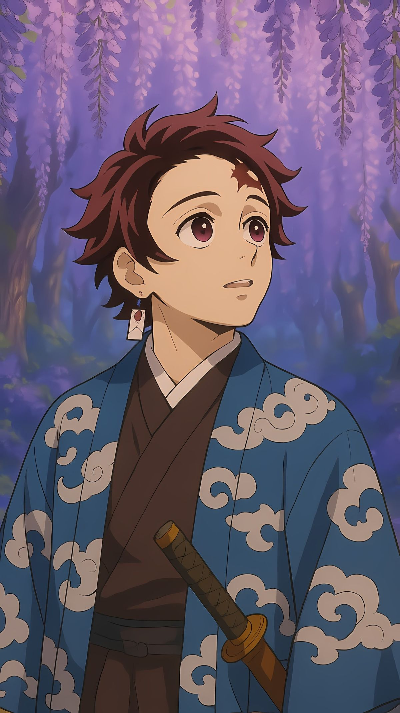
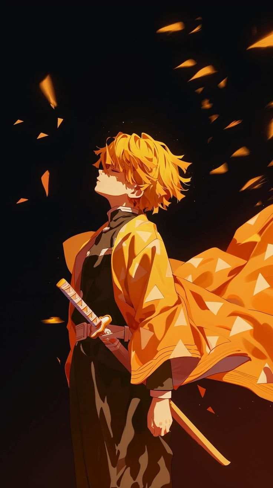
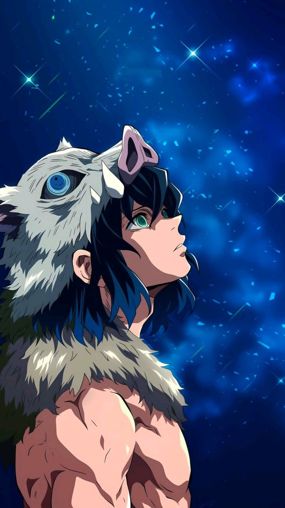
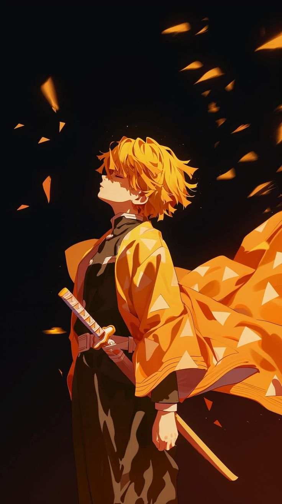
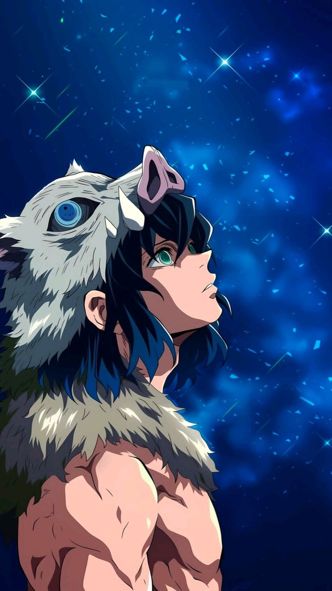
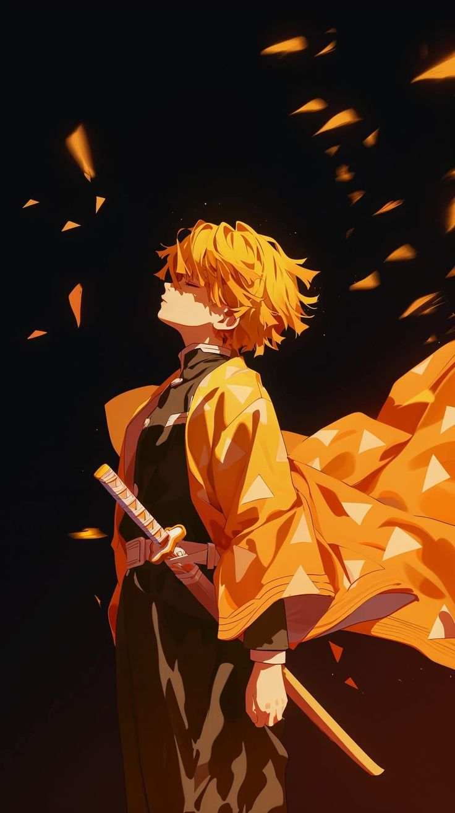
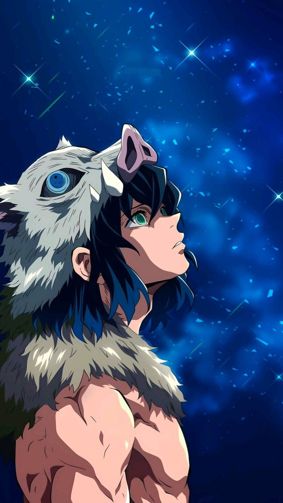
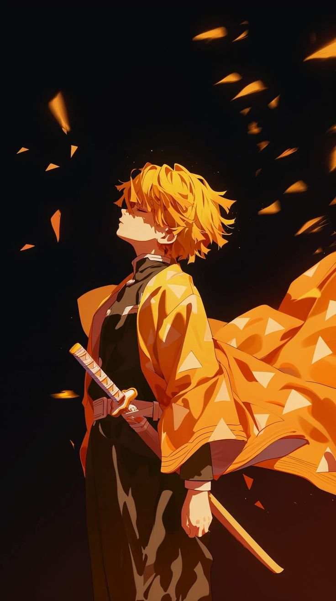
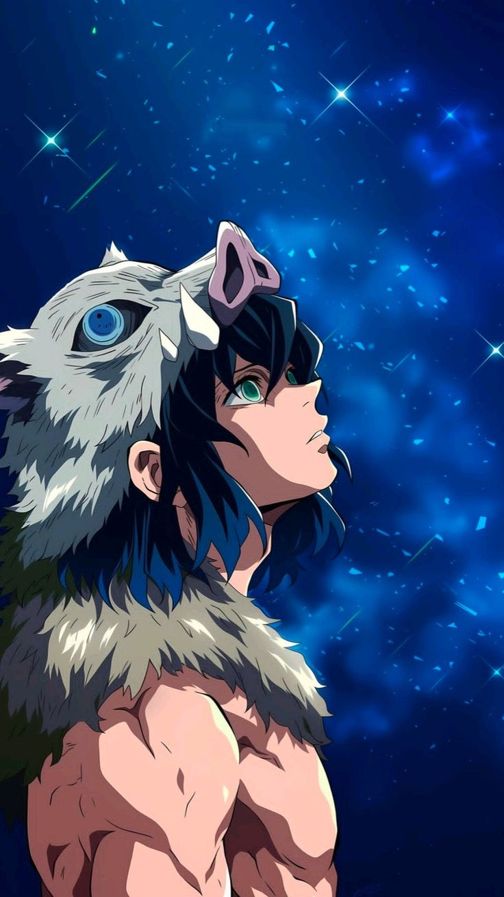

 





When Nezuko is bitten by a demon, she starts turning into one. Her brother Tanjiro fights demons to protect her, and he also protects her from the Hashira, convincing them that she is not harmful

